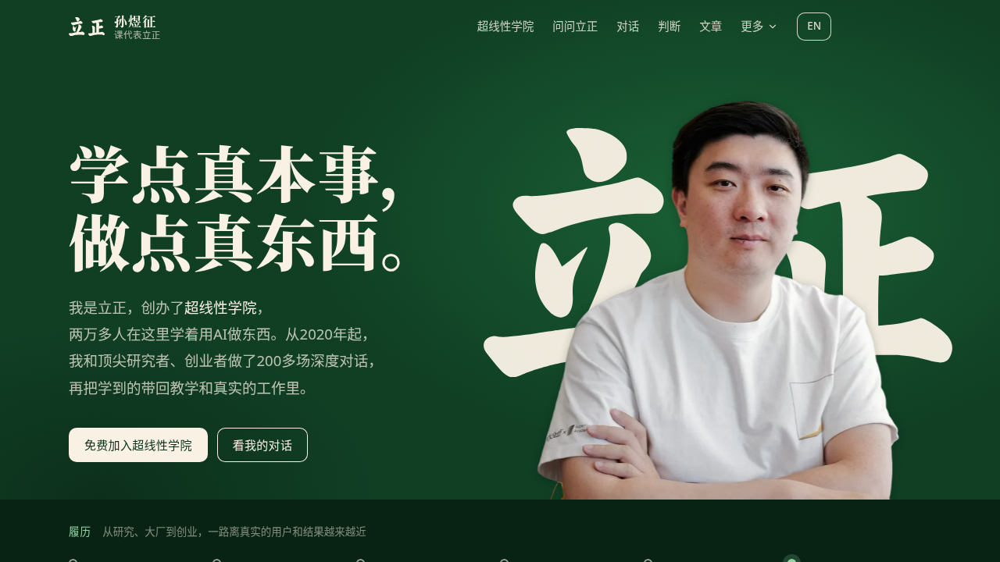

这份复刻是怎么做的（REA 路径）
本仓库是 https://www.lizheng.ai/ 的首页级学习对照（study clone）。它不是官方站点，不宣称 1:1 还原全站，也不实现原站的提问后端、成员地图、登录或分析脚本。
Evidence ID: ev_39b92b0aad3fd58dac4a146c46d0369141fa7e261f06874c8d95ddc7aefa4e1c
操作：capture_browser_scenario（Playwright / Chromium 139，受控回放，约 17068ms，保留 458 条网络事件）
本地证据目录（完整 bundle 未整包提交）：/workspace/lizheng-rea/
真正用来搭页面的证据
| 材料 | 贡献 |
|---|---|
final-dom.html（约 85KB） | 水合后的首页 DOM：顶栏、Hero、履历、评价、现场、超线性学院、问问立正、对话、书、公开判断、文章、加入路径与页脚。发布的 index.html 就是这份快照，去掉可执行脚本并改写了 URL。 |
final.png | 首页首屏视觉核对（森林绿 Hero、人像、学点真本事，做点真东西。）。 |
assets/CityWindow-YiMFqqnz.css | 捕获的编译样式（原 URL /assets/CityWindow-YiMFqqnz.css，约 177KB）。含 .lz-home 设计 token（--lz-*）、顶栏/Hero/章节布局，以及部分 Tailwind 痕迹（--tw-*）。 |
assets/index-BaDp8EeZ.css | Geist Mono 的 @font-face 片段。 |
assets/fonts-Gl0BvC6K.css | Noto Serif SC（700/900 分片）与 Source Serif 4 的字体表。捕获到的 woff2 走本地；未捕获的分片热链回原站 /assets/...。 |
Noto Serif SC / Source Serif 4 *.woff2 | 网络体中实际请求到的中文/西文衬线字体分片（约 36 个文件）。 |
portrait-hero.webp、现场图、评价头像 | 捕获到的首屏人像、DoorDash / 因果辩论 / Mike Develin / Pinterest 现场图，以及刘嘉、Wei Manfredi、Vijaye Raji、戴雨森头像。 |
| 嘉宾头像、书封、Jev 视频封面等 | 水合 DOM 引用、但 17 秒捕获窗口里没有落下文件体；构建时向原站静态路径补抓或热链，并确认 HTTP 200。 |
a11y.json / a11y-value.json | 无障碍树：导航锚点、履历条目、评价、现场、学院功能、问答卡片、嘉宾、判断时间线等结构化清单。 |
/api/ask-lizheng/discovery/lists（捕获 JSON lists） | 说明「别人在问什么」是客户端拉取的；本复刻只回放已水合进 DOM 的 3 张卡片，不把该 JSON 当运行时 API 执行。 |
FINDINGS.md / network-index.json | 栈信号与 URL 地图。 |
捕获截图（首屏，证据 final.png）：

本地回放首屏（静态服务器截图，声明条为复刻叠加）：
从捕获网络体观察到的栈信号（不是猜测）
- Vite 资源哈希：
/assets/index-dce2JSrJ.js、index-BaDp8EeZ.css、CityWindow-qdGblRGF.js/CityWindow-YiMFqqnz.css、fonts-Gl0BvC6K.css、client-D6DYtmJw.js等 - React 水合 + SSR 痕迹：根节点
id="root" data-ssr="true"；首包 HTML 已有完整章节骨架 - 字体：Noto Serif SC（700 / 900 分片 woff2）、Source Serif 4、Geist Variable（CityWindow CSS 引用）、Geist Mono（index CSS 引用）
- Vercel Insights：
/_vercel/insights/script.js（@vercel/analytics/react1.5.0）——本复刻已剥离 - CityWindow 社区点阵是独立 chunk（JS + CSS），画布由客户端绘制
- UI 信号：Sonner 吐司样式、Lucide 图标、部分 Tailwind 工具类（书区 Founding Member 条）
- 「问问立正」发现列表接口：
GET /api/ask-lizheng/discovery/lists
原站主 bundle 与 CityWindow / client JS 已捕获但故意不随仓库分发、也不在页面上执行。本复刻是渲染后首页的静态回放，不是原站客户端的再分发。
REA 路径 vs「静态扫包 + 手搓」
对照方（网站复刻 bot、另一条方法）是用 Vite + React + wouter + Tailwind 重新手写一套组件树，预览见 lizheng-ai-clone。
这份站点的首包 HTML 已经带 data-ssr="true"，所以「只存第一拍 HTML」也能拿到大部分文案和章节。但首包里还没有「别人在问什么」的具体卡片（例如捕获时的「已有945个公开问答」以及程序员转型 / 十个概念 / 怎么做自媒体等条目）——这些是水合之后由 /api/ask-lizheng/discovery/lists 填进 DOM 的。
REA 的 capture_browser_scenario 会等加载走完，再导出：
- 水合后 DOM，章节顺序、class 名、已填入的问答卡片可以直接回放，而不用对照截图重新设计组件。
- 网络响应体，于是哈希后的编译 CSS、实际用到的字体分片、首屏人像和评价头像可以原样拷贝，而不用从计算样式反推。
- 无障碍树，用来核对导航、履历、评价、判断时间线等结构化内容。
- 截图，用来做视觉回归。
这和「另起炉灶写一套 Tailwind 组件」相反：对照方重建观感；这里回放捕获的标记 + 捕获的 CSS，只额外加一层很薄的覆盖（声明条、URL 改写、判断列表展开、「更多」面板用页脚里已出现的路由拼出、提问等不足的交互跳回原站）。
URL 策略
- 已捕获的 CSS / 字体 / 图片从本地
assets/提供。 - 字体 CSS 里未落盘的 Noto / Source Serif / Geist 分片热链到
https://www.lizheng.ai/assets/...。 - DOM 引用但捕获窗口未保存的嘉宾头像、书封、现场补图，构建时向原站静态路径补抓；失败则热链并确认 200。
- 站内子路由（
/guests、/zbs、/decks、/about、/collab、/en等）指向原站。 - 提问、点赞、刷新问答、随机遇见成员、移动端菜单等未实现的交互跳到
ask.lizheng.ai/city.lizheng.ai/ 原站首页。没有鉴权绕过，也没有利用原站 API 冒充提问后端。
已还原
- 声明条 + 方法页入口
- 顶栏（品牌、页内锚点、EN、加入社区；「更多」用页脚路由拼出下拉）
- Hero：标题、导语、CTA、人像与「立正」字标
- 履历时间线
- 受邀机构 / 联合主办 / 同行评价
- 现场横向 marquee（已捕获的四张现场图）
- 超线性学院章节文案与四个入口（点阵画布为静态占位 + 「打开完整地图」）
- 问问立正：说明、模式文案、已水合的 3 张问答卡片；提交跳转原站问答
- 对话嘉宾网格与「还聊过」名单
- 三本书卡片 + Founding Member 提示条
- 公开判断时间线（折叠项可用「再看另外3条判断」展开）
- 文章列表、三种加入路径、企业合作、页脚与社交链接
未能还原
- 原站多路由（嘉宾详情、英文站、书页、合作页、演讲资料等）——链接回原站
- CityWindow 两万成员点阵、按名查找、随机遇见（不运行原站 JS）
- 问问立正的实时生成、点赞、刷新、再展开 5 条（跳转 ask.lizheng.ai）
- 原站移动端完整菜单、滚动后顶栏着色 / Hero join 按钮显隐等仅存在于客户端脚本的行为
- Vercel Analytics 以及其他跟踪脚本（有意剥离）
- 像素级 JS 入场动效（DOM 里已带
rise/rvclass，但驱动脚本未执行）